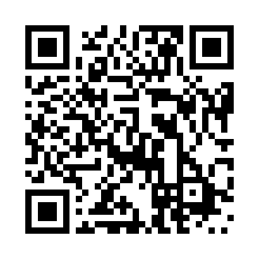
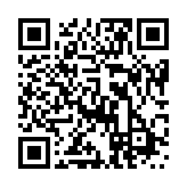

Локализация
Все мы разные!
Язык и валюта
Культурные особенности
Символы
иконки
цвета
иконки
цвета
Но есть и кое что общее
localization
internationalization
l10n
i18n
l10n
l10n это адаптация продукта для его соответствия языковым, культурным и прочим требованиям конкретного рынка.
- Cистема счисления, форматы даты и времени
- Валюта
- Использование систем ввода
- Символы, иконки, цвета
- Текст и графика, содержащие отсылки к идеям и действиям
- Различие легислативный требований
- …
i18n
i18n это процесс, в результате которого получается продукт, предусматривающий его простую локализацию для целевой аудитории в рамках многообразия её культур, регионов и языков.
- Разработка продукта таким образом, что бы устранить барьеры для для его локализации.
- Реализовать функционал, который не потребуются, пока не начнется локализация.
- Писать код, который позволяет реализовать поддержку локальных, языковых и культурных особенностей.
- Отделение элементов, которые требуют локализации от остальных.
Как обозначить
язык материалов?
язык материалов?
Content-Language: de, fr, it<meta
http-equiv="Content-Language"
content="de, fr, it" />
<meta
http-equiv="Content-Language"
content="de, fr, it" />
<meta
name="dc.language"
content="en" />
<meta
name="dc.language"
content="en" />
<html lang="en-UK">
</html><article lang="und">
</article><article lang="zxx">
</article>:lang(en-UK){
font-family: "PT Sans", sans-serif;
}
:lang(zh-Hans){
font-family: "SimSum-18030",
SimHei, serif;
}<article translate="no">
</article><a
href="http://goo.gl/GJ2MeM"
hreflang="en">
The Battle for the Body Field
</a>a[hreflang = 'sv']:after {
content: " [Swedish] ";
}<article translate="no">
</article>Источники
 
http://w3.org/TR/#tr_Internationalization__All_
http://w3.org/blog/International/


http://multilingualweb.eu/